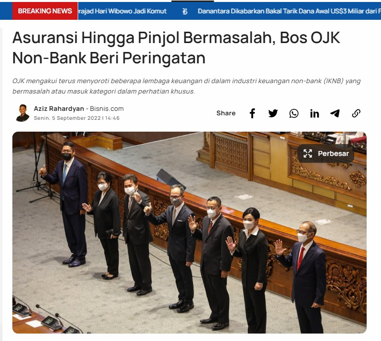

Ditulis oleh: Novi Salsya Elina | Tanggal: 13 Juli 2025
Lembaga Keuangan Syariah (LKS) adalah lembaga yang menjalankan operasional berdasarkan prinsip syariat Islam, seperti bebas dari riba (bunga), gharar (ketidakjelasan), dan maysir (judi). Transaksi menggunakan akad-akad seperti murabahah, ijarah, mudharabah, dan musyarakah.
Lembaga keuangan non-syariah atau konvensional adalah lembaga yang menjalankan kegiatan finansial dengan sistem bunga dan spekulasi, tanpa mempertimbangkan hukum agama.
| Aspek | Syariah | Non-Syariah |
|---|---|---|
| Dasar Operasi | Hukum Islam | Hukum negara & pasar bebas |
| Sistem Bunga | Tidak ada bunga (riba) | Menggunakan bunga |
| Produk | Akad syariah | Pinjaman berbunga, deposito |
Berdasarkan berita Bisnis.com (5 September 2022), OJK menyampaikan bahwa beberapa lembaga keuangan non-bank seperti asuransi dan pinjaman online (pinjol) mengalami masalah serius, mulai dari gagal bayar, bunga tinggi, hingga penagihan tidak manusiawi.
Contoh: AJB Bumiputera yang gagal bayar klaim dan banyak pinjol ilegal membebankan bunga tidak wajar kepada masyarakat.
Berikut adalah video tugas praktik Muamalah yang membahas tentang "Bahayanya Riba dalam Kehidupan Sehari-hari":
https://youtu.be/VbGvmETkcEs?si=7xSe4OwFc_Qr9UFK